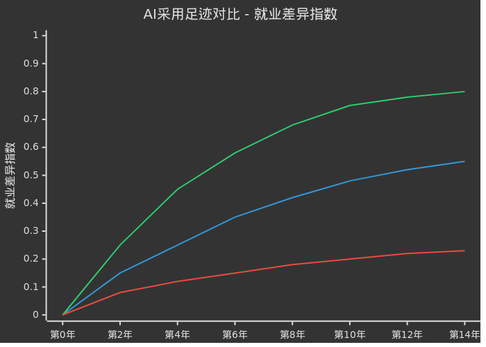

🤖 AI为何至今未引发就业末日？
耶鲁大学预算实验室 × 布鲁金斯学会 深度调研报告
👩🔬
玛莎·金贝尔 (Martha Gimbel)
耶鲁大学预算实验室执行董事 | 布鲁金斯学会研究员
原文发表于《自然》期刊评论版面
1️⃣ 核心证据：AI对就业影响尚属温和
研究背景
过去几个月，多项调查和媒体报道纷纷强调AI将越来越多地取代人工岗位。总部位于芝加哥的招聘公司Challenger追踪数据显示：2025年，美国因AI引发的裁员数量可能是关税引发裁员数量的七倍之多。
⚠️ 警示信号：这些数据助长了普遍预期——劳动力市场可能正处于剧变的边缘。最悲观的预测甚至将当下比作第一次工业革命时期（1760-1830年）。
耶鲁研究的发现
然而，耶鲁大学预算实验室与布鲁金斯学会的研究发现：自2022年ChatGPT问世以来，至今尚无证据表明就业模式已开始发生显著变化。
📊 AI采用足迹对比
技术变革出现后对就业的冲击程度（就业差异指数）

✅ 好消息：美国学术界和政策制定者仍有时间来解决这个问题，并确定在转型期哪些群体可能需要支持。
2️⃣ AI普及现状：数据揭示真相
企业AI采用率
美国人口普查局2023年中期至2026年2月的调查数据显示：
💡 关键洞察：这些数字可能高估了实际的有效采用率。高管们常常面临来自股东的压力，需要阐明公司的"AI战略"并展现出前瞻性的姿态。然而，AI模型可能与公司业务毫无关联，或者缺乏令人信服的应用场景。
CEO言论 vs 实际数据
| 维度 | CEO言论 | 实际数据 |
|---|
| AI战略 | 高调宣布变革 | 缺乏具体应用场景 |
| 采用率 | 暗示全面普及 | 仅18%实际使用 |
| 影响程度 | 颠覆性变革 | 就业模式无显著变化 |
| 时间框架 | 迫在眉睫 | 仍在早期阶段 |
坦率地说：统计CEO们在股东大会上提及AI的次数，实在没什么用处。关键是要看某些职业的就业岗位是否减少，而另一些是否增加。
3️⃣ 历史案例：技术变革与就业
计算机与互联网时代的启示
自计算机和互联网时代开启以来，市场对计算机程序员的需求持续上升，而对秘书等部分岗位的需求则不断下降：
重要发现：这些工作岗位并非一夜之间消失，但这一趋势对掌握旧技术相关技能的劳动者产生了深远的影响。一项研究估计，2018年约60%的工作岗位所对应的职业在1940年时根本不存在。
AI时代 vs 历史技术革命
⚡ 电力革命
- • 发现本身对劳动力市场冲击微乎其微
- • 真正颠覆发生在后来——各种应用
- • 室内照明、电梯、麦克风等工具
- • 劳动者有数年甚至数十年适应时间
🤖 AI革命
- • 展开速度可能远超以往
- • ChatGPT仅用2个月破1亿用户
- • 但就业模式尚未显著变化
- • 仍有时间准备和适应
4️⃣ 工业革命的教训
1822年的警示
1760-1830年
第一次工业革命：机械化提高普遍生活水平，但短期内给劳动者生计造成广泛冲击
1822年
美国还没有成立劳工统计局；不存在任何关于就业或产出的系统记录
2026年
我们有机会避免重蹈覆辙：预先判断需要哪些数据，建设收集基础设施
💭 作者的反思："当关于AI导致失业的警报初次拉响时，我不禁想到了工业革命引发的动荡。从某种意义上说，我是否就是当代的纺织工人？成为那些生计被新机器所颠覆的劳动者之一，究竟是何等滋味？"
5️⃣ 应对方案：构建数据追踪系统
当前困境
| 问题 | 现状 | 风险 |
|---|
| 数据缺失 | 最有价值的数据在私营部门手中 | 讨论只能基于臆测 |
| 政策定位不准 | 缺乏确凿证据 | 可能错过真正受冲击人群 |
| 干预时机 | 无实时追踪 | 可能为时过晚 |
需要追踪的关键指标
三方协同机制
🏛️ 政府
- • 制定数据收集标准
- • 建立统计基础设施
- • 设计针对性支持政策
🏢 私营部门
- • 开放招聘数据
- • 分享AI应用情况
- • 提供工资单记录
🎓 学术界
- • 分析数据趋势
- • 评估政策效果
- • 提供决策建议
👥 劳动者
- • 了解转型趋势
- • 获取技能培训
- • 适应新岗位需求
6️⃣ 政策建议
短期措施
| 措施 | 目标 | 时间框架 |
|---|
| 建立AI就业影响监测系统 | 实时追踪变化 | 6个月内 |
| 与私营部门数据共享协议 | 获取关键数据 | 1年内 |
| 识别高风险职业群体 | 精准定位支持 | 持续进行 |
长期措施
| 措施 | 目标 | 时间框架 |
|---|
| 建立职业转型培训体系 | 帮助劳动者适应 | 3-5年 |
| 完善社会保障网络 | 缓冲转型冲击 | 持续优化 |
| 培育新兴岗位创造机制 | 增加就业机会 | 长期战略 |
7️⃣ 结论
"这一次，我们可以预先判断需要哪些数据，建设收集这些数据的基础设施，并确保我们能够在技术变革展开的同时，理解其产生的影响。"
AI对就业的影响目前尚属温和，这给了我们宝贵的时间窗口。关键不是要否定变革本身，而是不要被商业领袖的空洞言辞所裹挟。我们需要的是：数据驱动的决策，而非臆测驱动的恐慌。